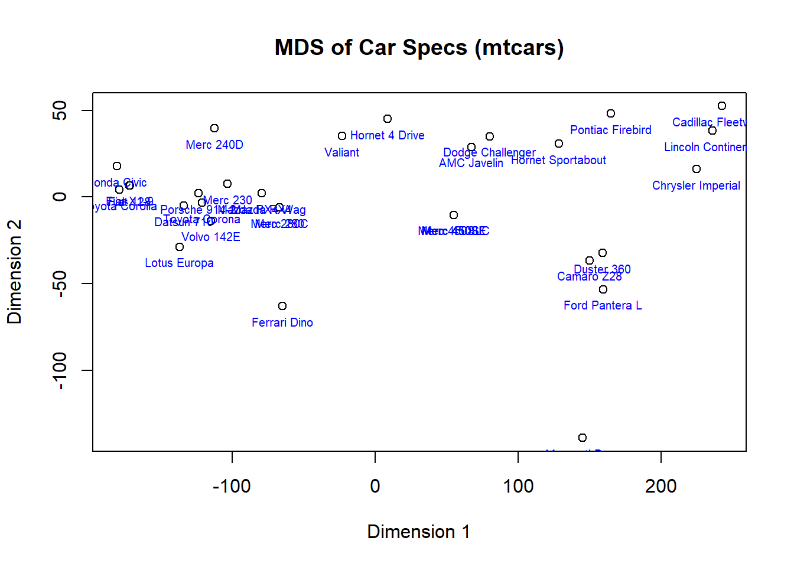

Unveiling Car Specs with Multidimensional Scaling in R
code
rtip
operations
Author
Steven P. Sanderson II, MPH
Published
April 4, 2024
Introduction
Visualizing similarities between data points can be tricky, especially when dealing with many features. This is where multidimensional scaling (MDS) comes in handy. It allows us to explore these relationships in a lower-dimensional space, typically 2D or 3D for easier interpretation. In R, the cmdscale() function from base R and is a great tool for performing classical MDS.
cmdscale()
Here’s a breakdown of its arguments:
distance_matrix: This is the key argument. It represents a matrix containing the pairwise distances between your data points. You can calculate this using the dist() function.
eig: A logical value indicating whether you want the function to return the eigenvalues (default is FALSE). Eigenvalues help assess the quality of the dimensionality reduction.
k: This specifies the number of dimensions for the resulting low-dimensional space (default is 2). You can choose higher values for more complex data, but visualization becomes trickier.
...: Additional arguments can be used for fine-tuning the MDS process, but these are less common for basic applications.
Car Specs with MDS: A Step-by-Step Example
Let’s use the built-in mtcars dataset in R to demonstrate the power of MDS. This dataset contains information about various car models, including aspects like horsepower, mileage, and weight. While these features provide valuable insights, visualizing all of them simultaneously can be challenging. MDS will help us explore the relationships between these car specifications in a 2D space.
Here’s the code with explanations:
# Select relevant numerical features (exclude car names)car_features <- mtcars[, c(3:11)]# Calculate pairwise distances between car featuresdistance_matrix <-dist(car_features)head(distance_matrix, 3)
[1] 0.6153251 54.8426385 98.1117059
# Perform MDS to get a 2D representationmds_results <-cmdscale(distance_matrix, k =2)head(mds_results, 3)
# Create a base R plotplot(mds_results[, 1], mds_results[, 2], xlab ="Dimension 1", ylab ="Dimension 2",main ="MDS of Car Specs (mtcars)")# Add text labels for car names (optional)text(mds_results, labels =rownames(mtcars), col ="blue", cex =0.62,pos =1)

We load the mtcars dataset using data(mtcars).
We select relevant numerical features from the dataset (excluding car names) and store them in car_features.
The dist() function calculates the pairwise distances between data points based on the chosen features and stores them in the distance_matrix.
We run cmdscale() on the distance matrix, specifying two dimensions (k = 2) for the output. The results are stored in mds_results.
Finally, we use the base R plot() function to create a scatter plot. We set axis labels and a main title for the plot.
Optional Step:
We can add text labels for each car model (using car names from mtcars$mpg) on the plot using the text() function. We set the pos argument to 1 to position the text labels above the data points and we set the cex argument to 0.62 so the size of the text decreases.
This plot can reveal interesting patterns. Cars closer together might share similar characteristics in terms of horsepower, weight, and other specifications. You might also observe some separation based on fuel efficiency reflected by the optional text labels.
Experiment and Discover!
MDS is a powerful tool for exploring data similarity in R. Now that you’ve seen the basics of cmdscale() and base R plotting functions, why not try it on your dataset? Remember to calculate the distance matrix appropriately based on the features you’re interested in. Play around with the number of dimensions (k) to see how it affects the visualization. By experimenting with MDS, you might uncover hidden relationships within your car data or any other dataset you choose to explore!